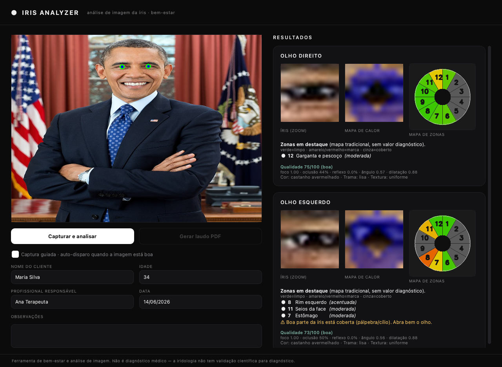
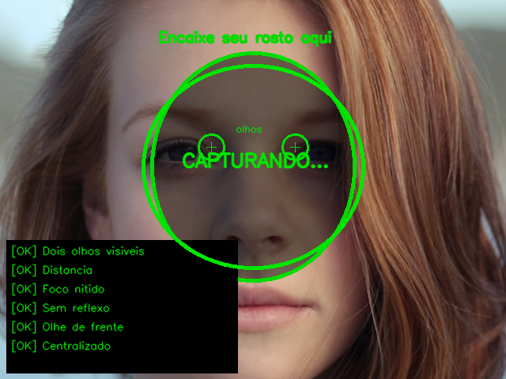
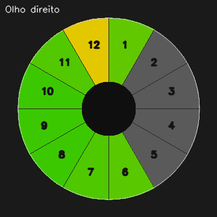
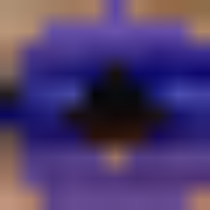
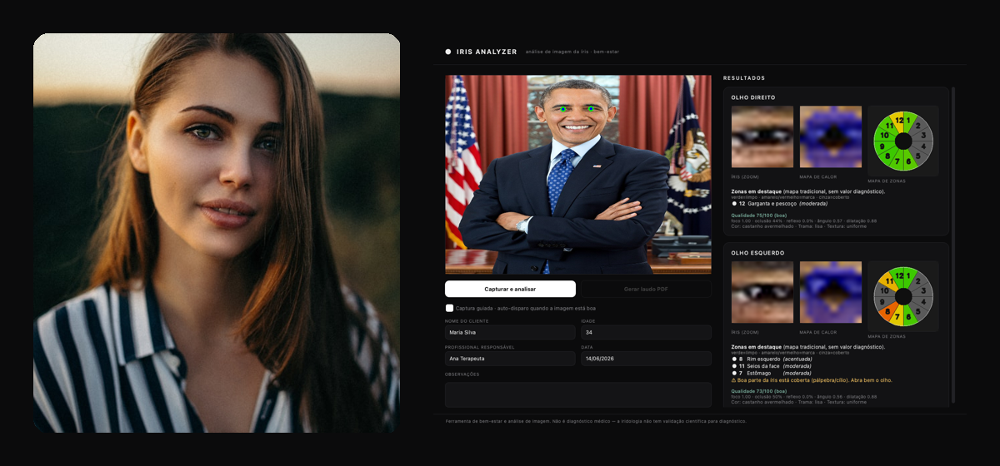

Captura guiada pela webcam, análise por visão computacional e laudo em PDF com a sua marca. Feito para profissionais de bem-estar.

Um alvo na tela orienta o posicionamento e a foto é capturada automaticamente quando a imagem está nítida, centralizada e sem reflexo.
Localiza íris e pupila com MediaPipe (478 pontos), robusto a ângulo e iluminação. Pupila real detectada, não estimada.
O clássico relógio da iridologia em 12 setores, com máscara de pálpebra e leitura objetiva por contraste e textura.
Realça marcas e fibras (filtro de Frangi + lacunas) diretamente sobre a imagem da íris.
Score multi-fator (foco, oclusão, reflexo, ângulo, dilatação) baseado na literatura de reconhecimento de íris.
Relatório com dados do cliente, imagens e mapas — pronto para imprimir ou enviar.
O cliente encaixa o rosto no contorno. Quando os indicadores ficam verdes, a foto é tirada automaticamente.

O sistema segmenta a íris, gera o mapa de zonas e o mapa de calor das marcas, e calcula o score de qualidade.

Preencha os dados do cliente e gere um laudo em PDF profissional com um clique.


O cliente se posiciona na câmera e a análise aparece em tempo real — você conduz a sessão e entrega o laudo na hora.
"A captura guiada acabou com as fotos borradas. Em poucos minutos tenho um laudo bonito para entregar ao cliente."
"O mapa de zonas e o de calor deixam a conversa com o cliente muito mais visual e profissional."
"Padronizou nossos atendimentos. Todo cliente sai com um relatório em PDF com a nossa marca."
* Personagens e depoimentos ilustrativos, para demonstração do produto.
Segmentação com MediaPipe, normalização de Daugman, realce de fibras com filtro de Frangi, detecção de lacunas como estruturas e avaliação de qualidade multi-fator (foco por alta frequência, off-angle, reflexo especular adaptativo). Código aberto, testado e documentado.